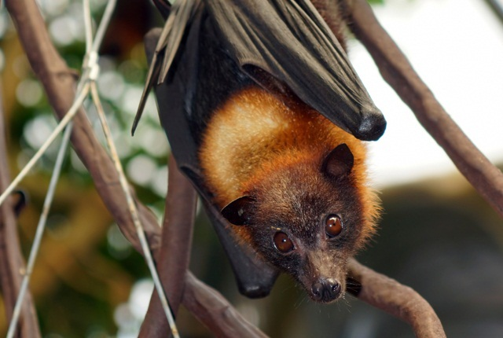
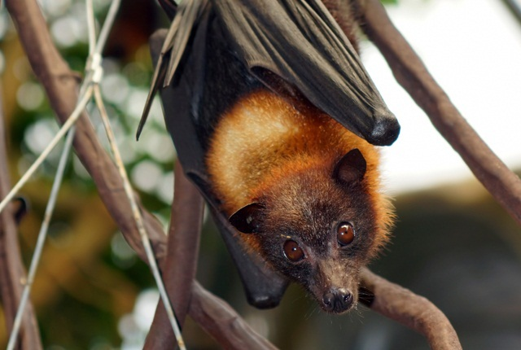

Transforms Transitions and Animations
And now the first three paragraphs of the Bat wikipedia. (Click here to go to the Bat wikipedia website)
Bats are mammals of the order Chiroptera.[a] With their forelimbs adapted as wings, they are the only mammals capable of true and sustained flight. Bats are more agile in flight than most birds, flying with their very long spread-out digits covered with a thin membrane or patagium. The smallest bat, and arguably the smallest extant mammal, is Kitti's hog-nosed bat, which is 29–34 millimetres (1+1⁄8–1+3⁄8 inches) in length, 150 mm (6 in) across the wings and 2–2.6 g (1⁄16–3⁄32 oz) in mass. The largest bats are the flying foxes, with the giant golden-crowned flying fox, Acerodon jubatus, reaching a weight of 1.6 kg (3+1⁄2 lb) and having a wingspan of 1.7 m (5 ft 7 in).
The second largest order of mammals after rodents, bats comprise about 20% of all classified mammal species worldwide, with over 1,400 species. These were traditionally divided into two suborders: the largely fruit-eating megabats, and the echolocating microbats. But more recent evidence has supported dividing the order into Yinpterochiroptera and Yangochiroptera, with megabats as members of the former along with several species of microbats. Many bats are insectivores, and most of the rest are frugivores (fruit-eaters) or nectarivores (nectar-eaters). A few species feed on animals other than insects; for example, the vampire bats feed on blood. Most bats are nocturnal, and many roost in caves or other refuges; it is uncertain whether bats have these behaviours to escape predators. Bats are present throughout the world, with the exception of extremely cold regions. They are important in their ecosystems for pollinating flowers and dispersing seeds; many tropical plants depend entirely on bats for these services.
Bats provide humans with some direct benefits, at the cost of some disadvantages. Bat dung has been mined as guano from caves and used as fertiliser. Bats consume insect pests, reducing the need for pesticides and other insect management measures. They are sometimes numerous enough and close enough to human settlements to serve as tourist attractions, and they are used as food across Asia and the Pacific Rim. However, fruit bats are frequently considered pests by fruit growers. Due to their physiology, bats are one type of animal that acts as a natural reservoir of many pathogens, such as rabies; and since they are highly mobile, social, and long-lived, they can readily spread disease among themselves. If humans interact with bats, these traits become potentially dangerous to humans. Some bats are also predators of mosquitoes, suppressing the transmission of mosquito-borne diseases.
 
